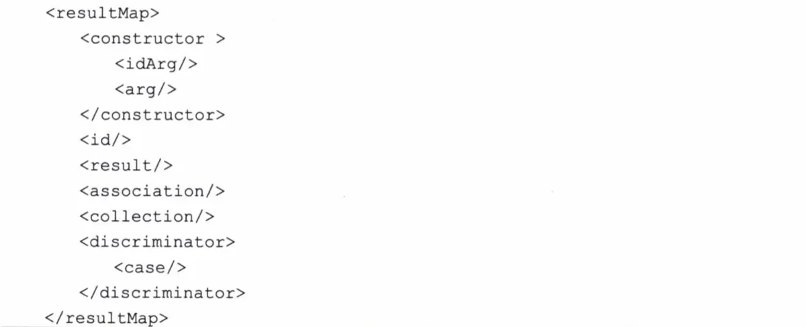

mapper.xml映射文件主要是用来编写SQL语句的，以及一些结果集的映射关系的编写，还有就是缓存的一些配置等等。
在映射文件里面可以配置以下标签：
| 元素名称 | 描述 | 备注 |
|---|---|---|
| select | 查询语句，最常用、最复杂的元素之一 | 可以自定义参数,返回结果集等 |
| insert | 插入语句 | 执行后返回一个整数，代表插入的条数 |
| update | 更新语句 | 执行后返回一个整数，代表更新的条数 |
| delete | 删除语句 | 执行后返回一个整数，代表删除的条数 |
| 定义参数映射关系 | 即将被删除的元素，不建议大家使用 | |
| sql | 允许定义一部分的SQL，然后在各个地方引用 | |
| resultMap | 用来描述从数据库结果集中来加载对象，它是它将提供映射规则最复杂、最强大的元素 | 它提供映射规则 |
| cache | 给定命名空间的缓存配置 | |
| cache-ref | 其他命名空间缓存配置的引用 |
可以在mybatis-config.xml中通过文件路径引入
<mappers>
<mapper resource="mappers/UserMapper.xml"/>
</mappers>通过包名引入
这样会将mapper下的所有mapper类加载到上下文当中
<mappers>
<package name="com.zl.mapper"/>
</mappers>用类注册引入
<mappers>
<mapper class="com.zl.mapper.UserMapper"/>
</mappers>自动映射可以在settings元素中配置autoMappingBehavior属性值来设置其策略：
insert的很多配置元素是和select一样的，就不再赘述，下面列出select中没有的属性
keyProperty
表示以哪个列作为属性的主键，不能和keyColumn同时使用
keyColumn
表示第几列是主键，不能和keyProperty同时使用
useGeneratedKeys
这会令MyBatis使用JDBC的getGeneratedKeys方法来取出由数据库内部生成的主键，但是使用它就必须要给keyProperty或者 keyColumn赋值
主键回填
方式一
<insert id="insertBook" useGeneratedKeys="true" keyProperty="id">
insert into t_book (b_name,author) values (#{name},#{author});
</insert>这种方式比较简单，就是在插入节点上添加 useGeneratedKeys 属性，同时设置接收回传主键的属性。配置完成后，我们执行一个插入操作，插入时传入一个对象，插入完成后，这个对象的 id 就会被自动赋值，值就是刚刚插入成功的id。
推荐大家使用这种方式，原因很简单，这种方式实现简便省事。
方式二
第二种方式则是利用MySQL自带的 last_insert_id() 函数查询刚刚插入的id，示例代码如下：
<insert id="insertBook">
<selectKey keyProperty="id" resultType="java.lang.Integer">
SELECT LAST_INSERT_ID()
</selectKey>
insert into t_book (b_name,author) values (#{name},#{author});
</insert>这种方式是在 insert 节点中添加 selectKey 来实现主键回填，实际上这种方式的功能更加丰富，因为 selectKey 节点中的 SQL 我们既可以在插入之前执行，也可以在插入之后执行（通过设置节点的 Order 属性为 AFTER 或者 BEFORE 可以实现），具体什么时候执行，还是要看具体的需求，如果是做主键回填，我们当然需要在插入 SQL 执行之后执行 selectKey 节点中的 SQL。
注意第二种方式一样也要通过设置 keyProperty 来指定将查询到的数据绑定到哪个属性上。
我们可以传入一个简单的参数如基本类型和字符串；也可以传入JavaBean；还可以指定特定的类型，以确定使用哪个 typeHandler处理它们。定义参薮属性的时候，MyBatis不允许换行。
resultMap里面标签如下图所示：

result是配置POJO到SQL列名的映射关系。
association代表一对一关系，比如每个班级都有一个班长
collection代表一对多关系，比如每个班级有多个学生
discriminator鉴别器，它可以根据实际选择采用哪个类作为实例，允许你根据特定的条件去关联不同的结果集合
全局延迟加载
为了处理N+1的问题，My Batis引入了延迟加载的功能。延迟加载功能的意义在于，开始并不取出级联数据，只有当使用它了才发送SQL去取回数据。MyBatis的配置中有两个全局的参数lazyLoadingEnabled和aggressiveLazyLoading。
局部延迟加载
由于全局配置的灵活性较差，MyBatis提供了局部延迟加载的功能。我们可以在association和 collection元素上加入属性值fetchType就可以了。
一级缓存
二级缓存
一级缓存在各个SqlSession间是相互隔离的。为了克服这个问题，我们往往需要配置二级缓存，使得缓存在SqlsessionFactory层面上能够提供给各个SqISession对象共享，二级缓存默认是不开启的。
<cache/>。